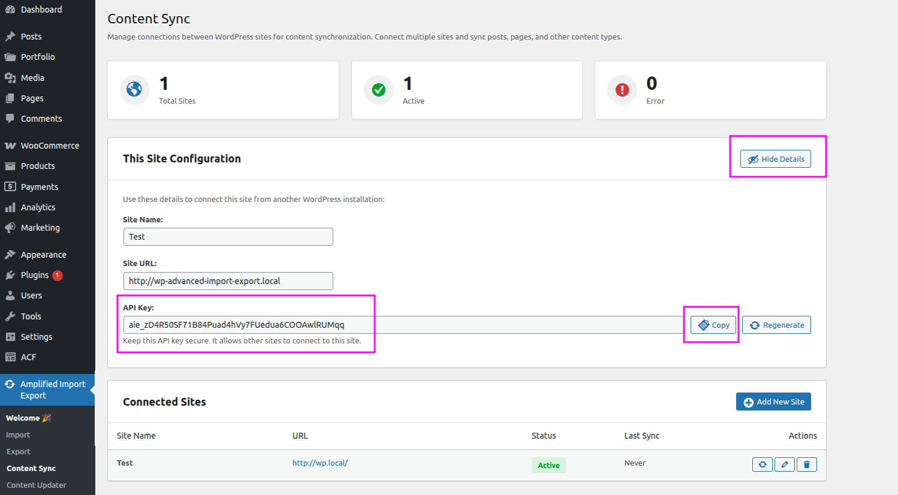
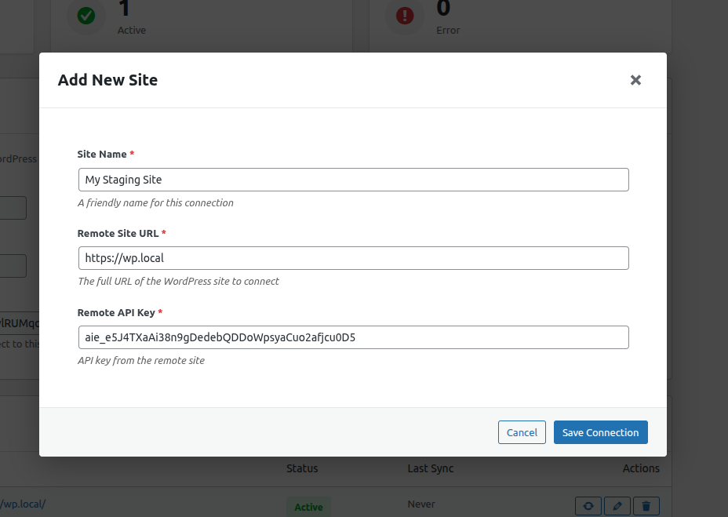

🔄 Content Synchronisation Between Sites
Connect two WordPress sites with a secure API key and sync posts, pages, custom post types, and media bidirectionally — without exporting a single file.
Overview
The Content Sync feature establishes a secure API connection between two WordPress sites. Once connected, you can Pull content from the remote site into the local one, or Push content from the local site to the remote one — perfect for keeping staging and production environments in sync.
Pull
Fetch selected posts from a remote site and import them locally.
Push
Send selected local posts to a connected remote site.
Bidirectional
Configure a connection to support both Pull and Push operations.
Media Sync
Automatically download and attach media files referenced in synced content.
Setting Up a Connection
Step 1 — Get Your Site API Key
On each WordPress site, navigate to Import Export → Content Sync. The plugin generates a unique 64-character API key for your site. Share this key with the administrator of the remote site so they can connect to you.

Step 2 — Add a Connected Site
On the Content Sync screen, click Add Site and fill in the form:
| Field | Description |
|---|---|
| Site Name | A friendly label for the connection (e.g., "Production", "Staging"). |
| Remote URL | The full URL of the remote WordPress site (e.g., https://example.com). |
| API Key | The 64-character API key obtained from the remote site's Content Sync screen. |
| Direction | Pull only, Push only, or Bidirectional. |
After saving, click Test Connection to verify the credentials are valid.

Syncing Content
Step 1 — Open the Sync Panel
Select a connected site from your list and click Sync Content. Choose whether you want to Pull (import from remote) or Push (export to remote).

Step 2 — Configure Sync Options
| Option | Description |
|---|---|
| Post Type | Select the post type to sync (Posts, Pages, any CPT). |
| Filter by Date | Only sync posts created or modified within a specific date range. |
| Filter by Author | Limit the sync to posts by a specific author. |
| Filter by Status | Only pull/push published, draft, or other statuses. |
| Filter by Taxonomy | Limit to posts in a specific category or taxonomy term. |
| Conflict Strategy | When a matching post already exists on the destination: Skip — leave it unchanged; Update — overwrite it; Duplicate — create a new post. |
| Sync Media | Download and import media files (featured images, gallery images) referenced in the post content. |
| Sync Taxonomies | Create missing taxonomy terms on the destination site before assigning them to posts. |
Step 3 — Select Posts & Run
The plugin fetches a list of matching posts from the remote (or local) site and displays them in a table. Select individual posts or click Select All, then click Sync Selected.

Security
- API Key Validation — All requests are authenticated with the 64-character key.
- Rate Limiting — The API endpoint enforces rate limits to prevent abuse.
- IP Whitelisting — Optionally restrict API access to specific IP addresses in the plugin options.
- HTTPS Recommended — Always use HTTPS on both sites when syncing sensitive content.